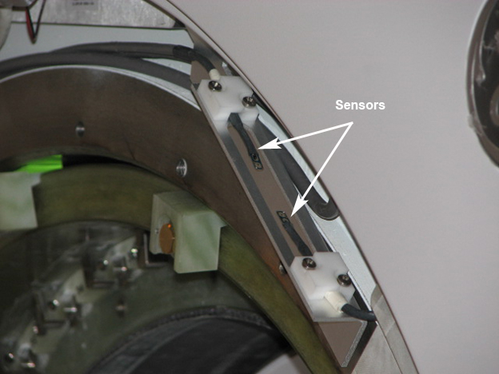
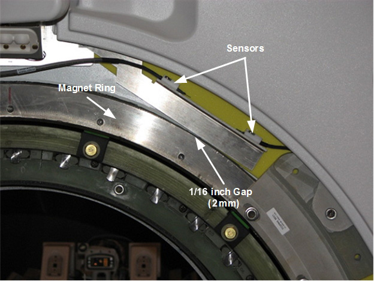

Check the orientation of the sensors. The sensor head should be in the center of the cut out (see Illustration 4).
Illustration 4: Front End Bell Sensors

Check that the air flow sensors are completely below the edge of the front end bell. The bracket position can be adjusted without removing the front end bell. Loosen the two (2) holding screws and push down until the bracket touches the magnet ring and then bring it back up 1/16 inch or 2 mm (see Illustration 5).
Illustration 5: Sensor Locations
